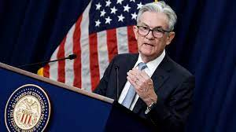

WASHINGTON – Fallout from the U.S. banking crisis is likely to tilt the economy into recession later this year, according to Federal Reserve documents released Wednesday.
Minutes from the March meeting of the Federal Open Market Committee included a presentation from staff members on potential repercussions from the failure of Silicon Valley Bank and other tumult in the financial sector that began in early March.
Though Vice Chair for Supervision Michael Barr said the banking sector “is sound and resilient,” staff economists said the economy will take a hit.
“Given their assessment of the potential economic effects of the recent banking-sector developments, the staff’s projection at the time of the March meeting included a mild recession starting later this year, with a recovery over the subsequent two years,” the meeting summary said.
Projections following the meeting indicated that Fed officials expect gross domestic product growth of just 0.4% for all of 2023. With the Atlanta Fed tracking a first-quarter gain around 2.2%, that would indicate a pullback later in the year.
That crisis had caused some speculation that the Fed might hold the line on rates, but officials stressed that more needed to be done to tame inflation.